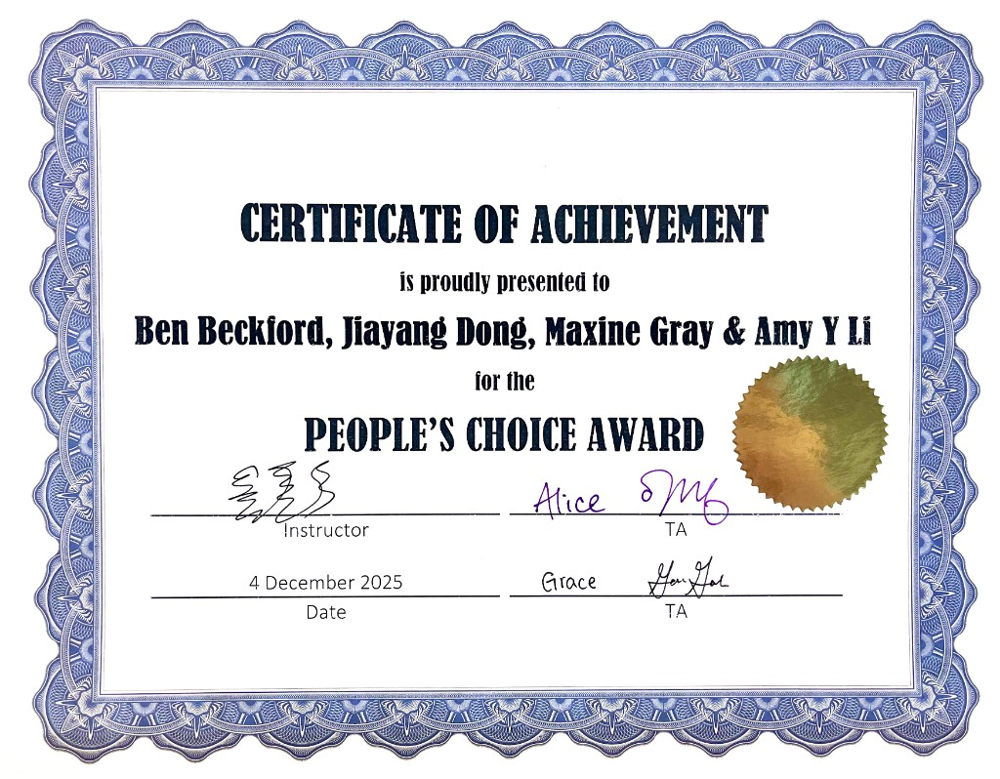

Selected work
AutoGreater
End-to-end UX for an exam-management tool—research, prototyping, and usability testing focused on accessibility and iteration.

People’s Choice Award
Awarded the People’s Choice Award for Auto Greater, an HCI project developed in UBC’s CPSC 344: Introduction to Human-Computer Interaction course. The award recognized the project as a standout among student projects based on audience choice.

Interactive prototype — exam management system
Walk through the live prototype in Figma Make (opens in a new tab): Exam Management System.
Open prototype in FigmaOverview
Worked through research, ideation, wireframes, prototypes, and usability testing. Applied HCI methods to refine the interface from real user feedback.
My role
- Conducted research and early-stage ideation
- Created wireframes and interactive prototypes
- Participated in user testing and design iteration
- Applied HCI methodologies throughout the design process
- Developed interface concepts using Figma and Figma Make